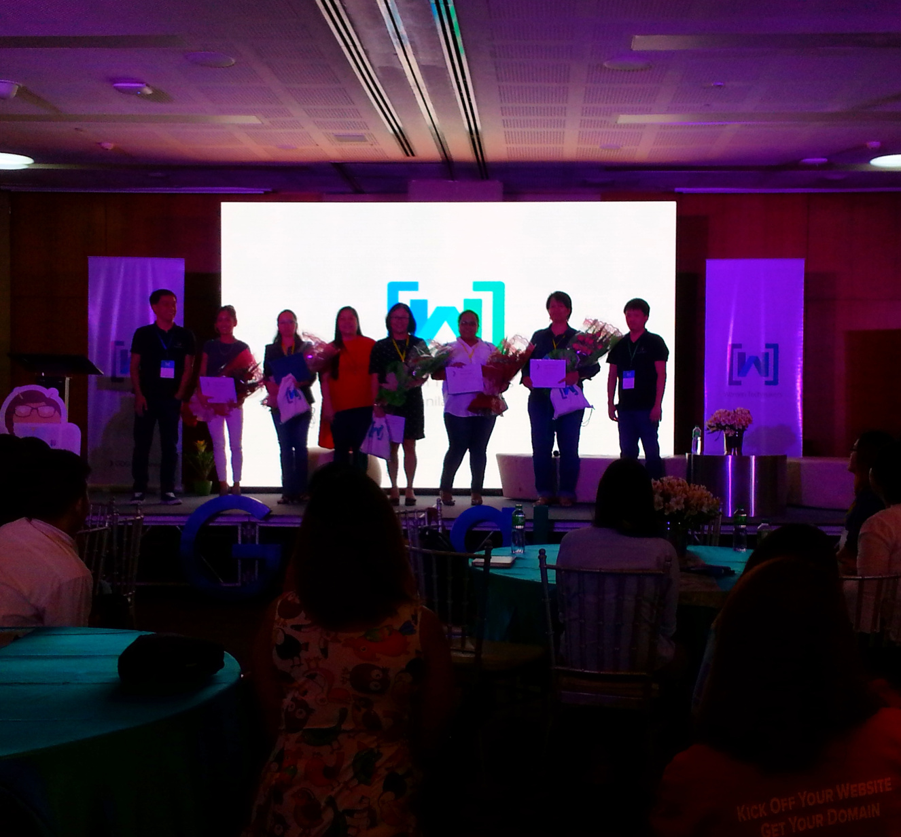

March 25, 2017
In celebration of Women’s Month, GDG Philippines hosted Women Techmakers Manila 2017 at The Forum, Globe Tower, BGC, Taguig City Philippines.
Most powerful women in tech as table names. I got Sheryl Sandberg - she is the chief operating officer of Facebook and the founder of LeanIn.Org. In June 2012, she was elected to Facebook's board of directors by existing board members, becoming the first woman to serve on its board.
Dr. Maricor Soriano
Physicist, University of the Philippines
Dr. Maricor Soriano is a physicist and a video and image processing expert from the University of the Philippines. She is one of the 2015 Leaders in Innovation Fellow of the UK-Newton Fund, the 2013 awardee of The Outstanding Women in the Nation’s Service in Applied Physics, and 2006 Outstanding Young Scientist. She heads the Video and Image Processing Lab in which she trains the next generation of scientists to seek and solve global problems with locally appropriate solutions.
Dr. Kristine Mae Magtubo
University Researcher I, National Telehealth Center
Dr. Kristine Mae Magtubo graduated Doctor of Medicine from the University of the Philippines – College of Medicine in 2011. Entered the Doctors to the Barrios (DTTB) program of the Department of Health and served two municipalities in Samar and Leyte (2011-2013). While working in these areas, was introduced to telemedicine as a means of providing better health care to her patients in the barrios after graduation from the DTTB program (2013) joined the National Telehealth Center as the project manager of the RxBox, the country’s largest eHealth research program she received training in technology commercialization from the Leaders in Innovation Fellowship of the UK Royal Academy of Engineering and the Asian Institute of Management, with support from the Department of Science and Technology, in 2015 and is now working on making the RxBox a sustainable platform for changing health care delivery in the country.
Ambe Tierro
Senior Managing Director, Accenture Technology in the Philippines
Ambe joined Accenture in 1990 and has worked on many large-scale systems integration and outsourcing engagements for key clients in Utilities and Communications. She has held key management roles in the Philippines Delivery Center, led its Systems Integration Service Group and Communications, Media & Technology (CMT) groups. Ambe was instrumental in driving the Delivery Innovation & Industrialization Program. As Application Services Lead for CMT, she was responsible for driving growth in Application Outsourcing, Systems Integration and Testing, and worked with the OU and Client Account Leadership and the Global Delivery Network to develop cost-competitive and innovative solutions, offerings and delivery models that are relevant for CMT. As the Lead for the Technology Delivery Centers in the Philippines, Ambe is responsible for operations, strategy development and execution, delivery and capability development. Ambe holds a Bachelor of Science degree in Computer Science from the De La Salle University in the Philippines. She lives with her husband, Dicky, and three children in Manila, Philippines.

Dr. Kathleen Aviso
Research and Advanced Studies Director, Gokongwei College of Engineering, De La Salle University
Kathleen B. Aviso is a full professor of chemical engineering and current Research and Advanced Studies Director of the Gokongwei College of Engineering at De La Salle University, Manila. Her research interests are computer-aided process engineering (CAPE), process systems engineering (PSE) and industrial ecology (IE). Her work focuses on developing computer models to aid in the planning and operation of sustainable and resilient industrial systems. Dr. Aviso received the degrees BS in Chemical Engineering from the University of the Philippines-Diliman, MS in Environmental Engineering and Management and PhD in Industrial Engineering from De La Salle University, Manila. She is the author of more than 60 Scopus-indexed publications with an h-index of 18, and was listed 43rd in the 2016 Webometrics ranking of Philippine scientists based on Google Scholar statistics. She is a member of the editorial boards of the scientific journals Process Integration and Optimization for Sustainability (Springer Nature) and Heliyon (Elsevier). For her scientific work, Dr. Aviso has received the 2016 Achievement Award from the National Research Council of the Philippines (NRCP), the 2016 Republica Award from the Commission on Higher Education (CHED), as well as the 2013 Outstanding Young Scientist and the 2008 Outstanding Scientific Paper Awards from the National Academy of Science and Technology (NAST). She was also the winner of the 2010 NAST Talent Search for Young Scientists, and a finalist in the 2016 ASEAN-US Science Prize for Women.
Chow Paredes
Co-Founder and Chief Revenue Officer at ZipMatch
Chow Paredes is the Co-Founder and Chief Revenue Officer at ZipMatch. A practicing Licensed Real Estate Broker, she specializes in property sales in key areas including Makati and Bonifacio Global City. Her experience as a sales director for 8 years gives her an extensive understanding of buyer behavior, sales people skill optimization, and the real estate sales process in the Philippines. She graduated from De La Salle–College of Saint Benilde with a degree in Interdisciplinary Studies.
Kristine Mae Adlaon
Faculty, University of the Immaculate Conception – Davao
Kristine Mae Adlaon is a faculty at the University of the Immaculate Conception, Davao. She is a passionate educator and a proud Davaoña. She is currently pursuing her post-graduate studies in Computer Science at the De La Salle University- Manila with research interest in Deep Learning for Natural Language Processing. She loves to teach and learn at the same time. She hopes that someday she will be able to influence, inspire and encourage more women to become more active in the Computer Science field and help each other make a difference. She enjoys exploring and learning new things.